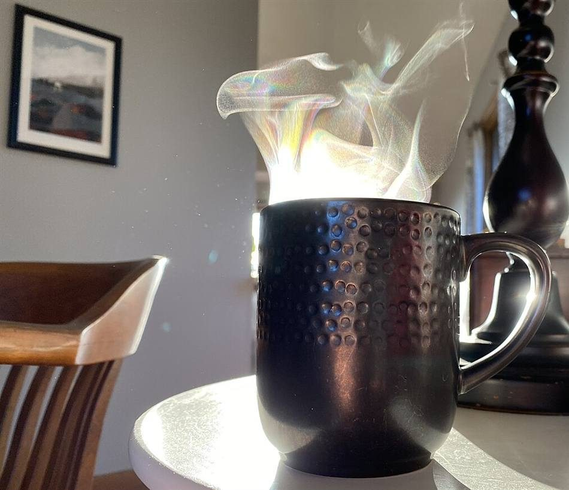
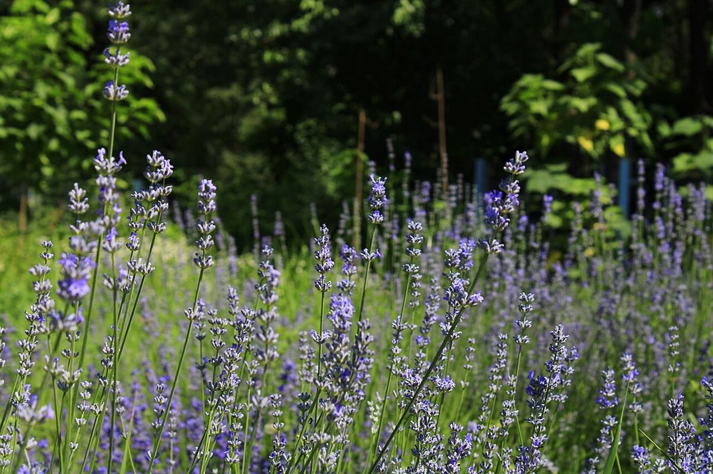

カフェ・
ド・シフォン
兵庫県尼崎市 / カフェ
ひっくり返して、あわてず冷ます。
そんな「待つ時間」をテーマにした、試作ホームページです。
案内は5つの手順で。
焼く → 逆さ → 冷ます → 外す → 切る

手順は五つ


確認できていること
- 屋号
- カフェ・ド・シフォン
- 所在地
- 〒660-0884 兵庫県尼崎市神田中通8丁目264
- cafe_de_chiffon
- 電話
- なし
- 営業時間・定休日
- 準備中
掲載しているのは所在地とInstagramのみです。営業時間・メニュー・価格・予約・駐車場などは、お店に確認のうえ掲載します(現在は準備中)。
最新情報はInstagramをご確認ください。